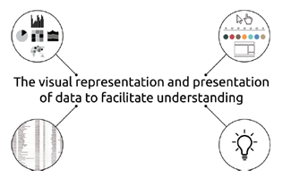
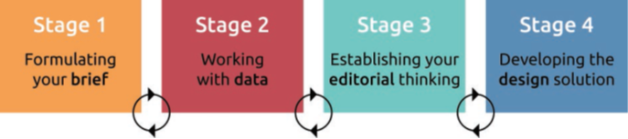
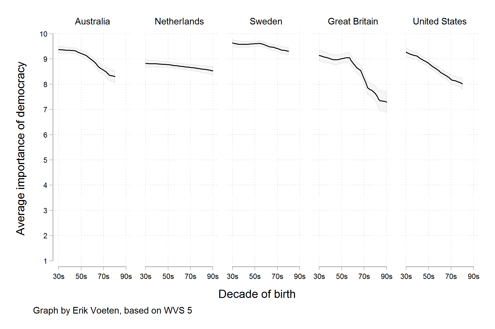
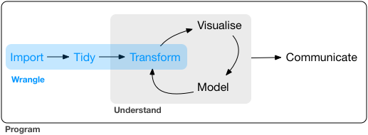
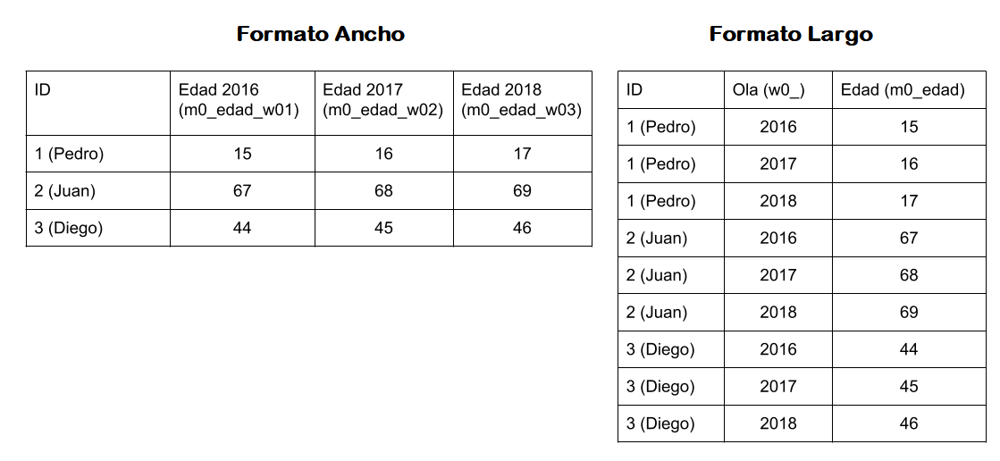
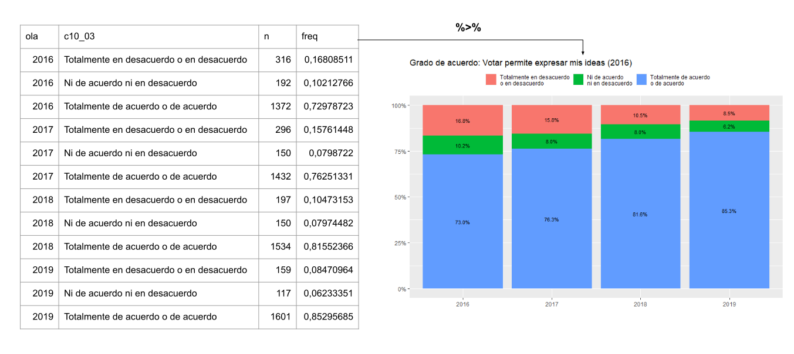

Ciencia de Datos Aplicada con RStudio
Sesión VIII: Introducción a la Visualización de Datos Longitudinales
Profesor: Cristóbal Ortiz Vilches
Estructura de la sesión
1. Repaso y Objetivos
¿Qué vimos en la sesión anterior?
- Diseño muestral complejo
- La encuestas no tienen un diseño muestral simple
- Para calcular estadísticos de manera rigurosa, debo utilizar ponderadores
Objetivos de hoy
Bloque teórico
Lógica de la visualización de datos longitudinales
Flujo de trabajo para visualización
- flujo clásico
- flujo tidyverse
Bloque práctico
Visualización de datos con ggplot2
- Gráfico de barra
- Gráfico de barra apilada
- Gráfico de puntos
1. Lógica de la visualización de datos longitudinales
1.1. ¿Qué es la visualización de datos?
“En términos simples, se trata de gráficos y el acto de seleccionar el gráfico correcto para mostrar las características de los datos que se cree que son más relevantes.” (Kirk, 2018, p.17)
Se debe ser fiel a los datos, por lo que es muy importante un buen tratamiento de base de datos.
1.2. Fases de la visualización de datos.

- Formula tu plan de trabajo: planifica, define e inicia tu proyecto.
- Trabajando con la base de datos: produce, maneja y prepara tus datos.
- Establece tu pensamiento editorial: define qué le mostrarás a tu audiencia.
1.3. Ventajas y desventajas de los gráficos
Ventajas de los gráficos
- Facilita el entendimiento de los datos, lo cual fomenta abrir la ciencia.
- Tiene la capacidad de resumir datos, mostrando los elementos más relevantes.
- Es atractivo y capta mejor la atención de los y las lectoras.
Desventajas de los gráficos
- Limitaciones visuales a medida que crece la cantidad de variables que quiero representar
1.4. Cómo NO visualizar datos.
- Más allá de lo estético, el error más grande que se puede cometer es la mala representación de los datos, lo que probablemente se debe a un mal manejo de la base de datos.
- Un ejemplo de esto es el gráfico ¿Crisis de fe en la democracia? (New York Times), que veremos a continuación.
¿Crisis de la fe en la democracia?

Quizás no tanto…

2. Flujo de trabajo para visualizar datos
2.1. Flujo tidyverse

Flujo clásico: separación entre wrangle y visualise.
- Un código para preparar los datos y otro para analizarlos.
Flujo tidyverse: orientado a la comunicación de datos
- Herramientas tidyverse permiten juntar en un mismo código wrangle y visualise (o preparación y análisis).
2.2. Visualización con ggplot
- Para la visualización de datos se utiliza el paquete
ggplot2, el cual pertenece atidyverse. Al igual que otros paquetes de R, presenta distintas funciones que van desde el manejo de los datos hasta la estética en los gráficos.

2.3. Componentes ggplot2
Data [
data]: Es la base donde se encontrarán los datos para la creación de los gráficosGeometries [
geoms]: Configura los elementos visuales de los gráficos. Puede modificar datos estadísticos y estética.Aesthetics [
aes]: Se encarga de la estética del gráfico. Se puede cambiar lo colores, tamaños y formas. También, es posible hacer agrupaciones y editar la posición (x, y).Stats [
stat]: Se utiliza para hacer transformaciones estadísticas que nos permite comprender los datos.
Position [
Position]: Los ajustes de posición determinan cómo organizar [geoms].Coordinate systems [
coord]: Modifica los ejes x e y. Si es que este no es modificado, por defecto se genera el plano cartesiano.Facetting [
facet]: Sive para realizar conjuntos o sub - conjuntos de datos.Scale [
scale]: Transforma valores de la base de datos a valores visuales con su respectiva estética.Themes [
theme]: Controla la visualización de todos los elementos gráficos, a excepción de los datos.Labs [
labs]: Permite editar la visualización de los elementos de texto dentro del gráfico.
2.4. Preámbulo del bloque práctico
Pasos:
cargar librerías y dataset
limpieza dataset
transformar datos de wide a long (¿por qué?)
generar tabla con datos a visualizar
encadenar tabla con funciones de
ggplot2.
Paso de wide a long

Encadenar datos y la visualización con ggplot
